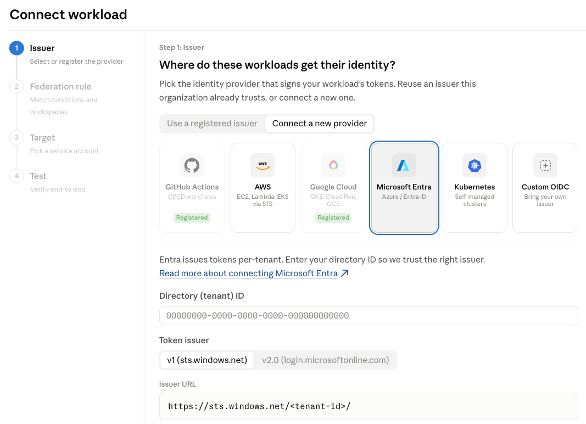

이제 워크로드 아이덴티티 페더레이션(Workload Identity Federation, WIF)을 Claude 플랫폼(Claude Platform)에서 정식으로(generally available) 사용할 수 있습니다. WIF는 OIDC를 준수하는 모든 아이덴티티 공급자(identity provider)와 호환되며, 자사의 퍼스트파티 SDK 및 Claude Code를 통해 엔드포인트에 접근하는 경우를 포함한 모든 Claude API 엔드포인트를 지원합니다.
워크로드(workload)를 위한 WIF와 대화형 세션을 위한 ant auth login을 함께 사용하면, 개발자는 Claude 플랫폼으로 무언가를 만들 때 더 이상 정적 API 키(static API key)를 직접 다룰 필요가 없습니다.
WIF는 정적 API 키를 요청 시점에 발급되는 수명이 짧고(short-lived) 범위가 제한된(scoped) 자격 증명(credential)으로 대체합니다. GitHub Actions를 돌리는 2인 스타트업이든, 세밀한 자격 증명 정책을 갖춘 엔터프라이즈든, 이제 여러분의 나머지 스택을 인증하는 것과 동일한 방식으로 Claude 플랫폼을 인증할 수 있습니다.
WIF를 사용하면 생성하거나, 교체(rotate)하거나, 유출될 수 있는 정적 Anthropic 자격 증명이 존재하지 않습니다. 워크로드는 이미 가지고 있는 아이덴티티로 인증합니다. AWS IAM 역할, GCP 또는 Kubernetes 서비스 계정(service account), Azure 관리형 아이덴티티(managed identity), GitHub Actions 토큰, Okta, 또는 그 밖의 OIDC를 준수하는 공급자가 그 예입니다.
또한 Claude 플랫폼에 서비스 계정(service account)을 새로 도입합니다. 이로써 공유 API 키 대신 각 워크로드가 자신만의 아이덴티티, 역할(role), 감사 추적(audit trail)을 가질 수 있습니다. 먼저, 페더레이션 규칙(federation rule)이 외부 아이덴티티를 서비스 계정에 연결(bind)합니다. 그런 다음 워크로드가 접근을 요청하면, Claude 플랫폼은 해당 워크로드의 서명된 OIDC 토큰을 검증하고, 그 클레임(claim)을 여러분의 페더레이션 규칙과 대조한 뒤, 서비스 계정의 역할로 범위가 제한된 수명이 짧은 액세스 토큰(access token)을 발급합니다. 모든 교환과 요청은 여러분의 감사 로그(audit log)에 해당 서비스 계정 기준으로 기록됩니다.
Claude 콘솔(Claude Console)은 워크로드 아이덴티티를 구성하기 위한 안내형 설정(guided setup) 흐름을 제공합니다. 이 설정은 각 단계를 검증하며, 마지막에는 여러분의 워크로드가 인증에 성공하는지 확인해 주는 테스트 명령으로 마무리됩니다.

WIF는 조직 관리를 위한 Admin API와 호환됩니다. 페더레이션 규칙은 세분화된 범위(fine-grained scope)를 통해 최소 권한(least-privilege) 접근으로 구성할 수 있습니다.
대규모로 운영하는 조직을 위해 페더레이션 구성을 완전히 프로그래밍 방식으로(programmatic) 처리할 수도 있습니다. 새로운 Admin API 엔드포인트를 사용하면 발급자(issuer), 서비스 계정, 페더레이션 규칙을 생성하고 업데이트할 수 있습니다.
API 키는 WIF와 함께 사용할 수 있으므로, 워크로드를 한 번에 하나씩 마이그레이션할 수 있습니다. 각 아이덴티티 공급자별 설정 가이드를 읽어 보거나, Claude 콘솔을 열어 첫 워크로드를 연결해 보세요.